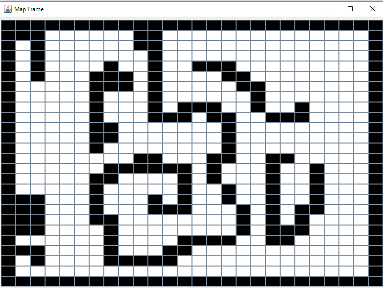

Scout System - Exploration
VISION
Create a system that can autonomously explore and map an unknown environment.GOALS
- Design and build the Exploration Phase in both the entities of the System, in order to define a navigation map
- Study an algorithm to explore the environment in a logical manner
- Create a map that can be interpreted and used by an autonomous Navigation agent
- Design and build a simulated and/or concrete autonomous agent.
WORK TO DO
- Build the Exploration Model of the of the Robot;
- Build the Exploration Model of the Console;
- Testing the components (unit testing);
- Define a valid algorithm to explore the unknown environment;
- Define a proper way to save the map;
- Build a simulated system and test it;
- Build a concrete system and test it;
Robot Analysis
Robot Model - Structure
Name: RobotContext: ctxRobot
The Robot is a composed entity that can navigate autonomously in the environment;
It's based on Raspberry Pi technology and equipped with sensor and motor, based on the DDR architecture:
- Two DC Motors, that allow the Robot to move in the environment, do strict curves and change his speed;
- Front Sonar sensor, allow the Robot to sense objects in front of him;
- Left Sonar sensor, allow the Robot to sense objects left of him;
- Explore from a START point the entire environment;
- Explore from an unknown point the entire environment;
- Abort the Exploration in every moment;
Robot Model - Behavior
Assumption 0: Robot start position is exactly the user defined START POSITION, Robot start direction is the Map NORTH.
Assumption 1: The environment is in some way complete bounded, so the exploration will, soon or later, end.
- At the Beginning of the Exploration phase the Robot waits a command (with or without START position and environment BOUNDS) from the Console;
- When it received the command, it begins to explore the environment;
- Every time it sense a new cell, it sends a notification to the Console;
- Robot must be reactive andstop the Exploration if needed;
- When the Exploration is done, it notify this event to the Console.
Console Analysis
Console Model - Structure
Name: ConsoleContext: ctxConsole
The Console is an atomic entity able to interact with the User and equipped with better computational capabilities.
To handle that tasks, It must be implemented on a desktop or mobile architecture and show an appropriate GUI. The Console offers a limited set of features:
- Start the Robot Exploration;
- Abort the Exploration in every moment;
- Show the Exploration progress in real time on GUI.
Robot Model - Behavior
- At the Beginning of the Exploration phase the Console waits that the user select the Exploration Map;
- Console show the map on GUI in a proper way
- Then user selects the START position
- When user decides to start the Exploration, the Console send the command to the Robot and show an unexplored map of the same size.
During the Exploration can happen that:- In every moment the User can abort the Exploration, so Console have to transmit this command to Robot
- If Robot find a new cell it sends the new cell position and state (clear or object);
- Robot explore all the environment and send a notification to Console to end the Exploration phase.
Interaction
I prefer to analyze both the entities in the same paragraph.
In this section i have to choose the type and format of data transmitted between Robot and Console.
-
local_gui_command : local_gui_command (COMMAND), this event is emitted by the GUI on user interaction, Console sense this event in order to handle the user interaction.
The payload COMMAND can be:
- explore,
to start the Robot Exploration without any data; - explore(FILENAME, START, BOUNDS, MODE),
to start the Robot Exploration with more information. The command provides the map FILENAME, the START position in the usually known format, the width and height BOUNDS and the MODE, simulated or robot.
- explore,
-
exploredebug : exploredebug ( START , BOUNDS ), this message is send from the Console to the Robot to start the Exploration with some knowledge about the environment (to test purpose)
I prefer the message form because Console perfectly knows the receiver of the data, furthermore a message is safer than an event, and i don't want to lose this command.- START is position( X , Y );
- BOUNDS is map( WIDTH , HEIGH )
-
explorefile : explorefile(START , FILENAME ), this message is send from the Console to the Robot to start the Exploration with some knowledge about the environment (to test purpose)
I prefer the message form because Console perfectly knows the receiver of the data, furthermore a message is safer than an event, and i don't want to lose this command.- START is position( X , Y );
- FILENAME is map absolute filename
-
explore : explore , this message is send from the Console to the Robot to start the Exploration without any knowledge about the environment
I prefer the message form because Console perfectly knows the receiver of the data, furthermore a message is safer than an event, and i don't want to lose this command.
This message is not implemented but start the exploration without any information of the world.
-
obstaclefront : obstacleleft is the event emitted by the Front Sonar when it detect an obstacle in the sensing distance, the Robot may listen or not this event;
-
obstacleleft : obstacleleft is the event emitted by the Left Sonar when it detect an obstacle in the sensing distance, the Robot may listen or not this event;
-
expdata : expdata ( POS , STATE ), is an event emitted by Robot and sensed by Console. It is used to notify the Console of a new founded Cell.
- POS is position ( X , Y );
- STATE is clear or object.
-
abort : abort, is an event emitted by Console and sensed by Robot, it's used to abort the Navigation;
-
end : end, is and event emitted by Robot when it reach the GOAL.
The same applies to abort, maybe i have multiple robots.
QActor Models & Prolog Theory
Console Model ----> console.qa
Console Prolog Theory ----> consoleTheory.pl
Robot Model ----> robot.ddr
Robot Prolog Theory ----> robotTheory.pl
Exploration Problem Analysis
As I said in the home page, In the Exploration phase a don't need a lot of computational power because the exploration seep depend on the Robot speed.
To obstain a more precise exploration I prefer to slow down the Robot speed.
So the system is very similar to ButtonLedSystem beacuse the Console sends a command to the Robot and it execute it in some (unknown from the Console) way.
Anyhow, i assume that:
Assumption 1: The map is divided in squared cells of uniform size. The size of a cell is based on robot dimensions. Consequently, the navigation is discrete.
The map has a maximum width and height and can be or not bounded by obstacles borders.
Detect Obstacles
In Order to detect unexpected obstacles Robot can use the Sonar.
The problem is when be sensitive.
Assumption 2: Robot can only step forward of a defined distance, or turn left/right of a defined angle.
During a rotation the Robot position doesn't change, so it can find an unexpected obstacle only during a step forward.
There are a lot of available techniques, i decide to adopt a pessimistic one:
The detection distance of Sonar is equal to step distance, before every forward movement Robot listen to Sonar to know if the next cell is clear.
This solution is a bit pessimistic but very simple to implement and also is the normal behavior of an intelligent agent.
In the Exploration phase the Robot will use 2 Sonars, one frontal and one left. The reason will be clear in the Algorithm Section.
Handle new objects
The requirements said that:
During the Exploration, the system must show the state of the task in a proper way. Robot must notify the Console every time it detect a new cell, bot CLEAR and OBJECT.
So, both Robot and Console mantaint the current explored Map.
Explore
There are a lot of way to Explore an unknown environment.
First of all, What do i mean with "Explore"?
Whit Explore I mean the process where, an autonomous agent that knows almos nothing about the environment, incrementally detect elements around it in order to define a digital representation of the space.
Exploration Algorithm
My Exploration Algorithm is base on somethings really different, a Maze solving Algorithm called Left Wall Follower.You can find more information here. The Left Hand Wall Follower is a maze solving algorith for "simply connected" or "perfect" mazes. In a perfect maze every wall is connected with the external borders, in other words, if I follow a wall while my left hand touch it everytime, soon or later i'll reach the exit.
With this very big assumption we can't have a single object alone in a clear space beacuse, with the simple rule said, we'll fall into an infinite loop of wall following.
So I has to modify the simple wall follower algorithm in order to:
- Detect and Avoid loop situation;
- Know if there is some unexplored spaces.
Fortunatly those two tasks can be achieved at the same time.
The robot mantain a digital representation of the explored world, when it walks on an already explored cell, it makes a local search to find if there is a hole in his exploration map.
If so, it find the best path to traver to the unexplored area.
If no hole is found, the Exploration is complete.
To implement this algorithm there are 3 things to define:
- How the environment is represented? ---> Map Description ;
- Which moves are possible? ---> Move Description
- How can I find an unexplored area? ---> Breadth First Algorithm
- How can I generate the best path to that area? ---> Planning Algorithm
Map Description
According with Assumption 1, the map:- is discretized in uniform size cells;
- has defined width and height;
- can be or not be bounded by obstacle borders.

In my map model obstacles are the black cells, white cells are walkable areas.
Assumption 4 The Robot fits perfectly the cell.
Move Description
In the Navigation, i have to minimize the travel time, so i use both tiled and diagonal movements.
In the Exploration indeed i must wall ol the walkable area, so i don't take any advantage with diagonal moves. So I prefer to use a more classical model:
- Each cell is defined as only X and Y coordinates;
- At each state, the Robot can move to one of the adjacent cell;
- This movement is atomic, also if include rotation;
- Rotation are alway of 90�;
- Move horizontal and vertical cost 10;
Is very important to mantain a correct description of the internal state in order to process the sensed obstacles of real world and send data to Console.
Breadth First Algorithm
When Robot detect an already walked cell it make a search in order to find the nearest unexplored aread. This search is based on Breadth First Algorithm.This is an uninformed algorithm based on a search tree. It starts from the root node (the already explored cell) and evaluate the neighbor nodes before moving to the farther level neighbors.
So this algorithm starts from the current already explored cell and expands, as a wildfire in each direction until it finds an unexplored cell.
The expansion is made anly with allowed movements, if the adjacent cell is a wall the Robot will not expand it.
So it will find only reachable unexplored areas.
Look here for more information.
Planning Algorithm
When I find an unexplored cell, Robot have to travel from the current position to that location. This task is the same as the Navigation task, indeed I used the same solution explained in the Navigationpage. During this travel is used the digital representation of the world, moreover, the Robot assume a Closed World Assumption:
"If a cell is Unexplored it's an Obstacle".